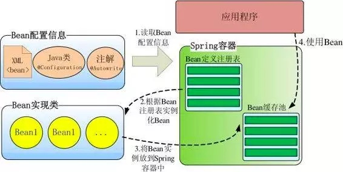
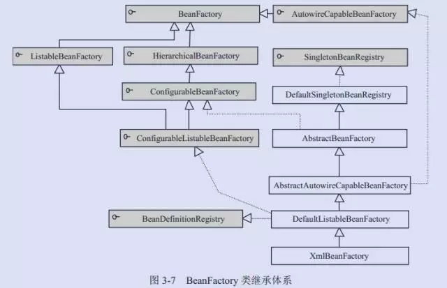
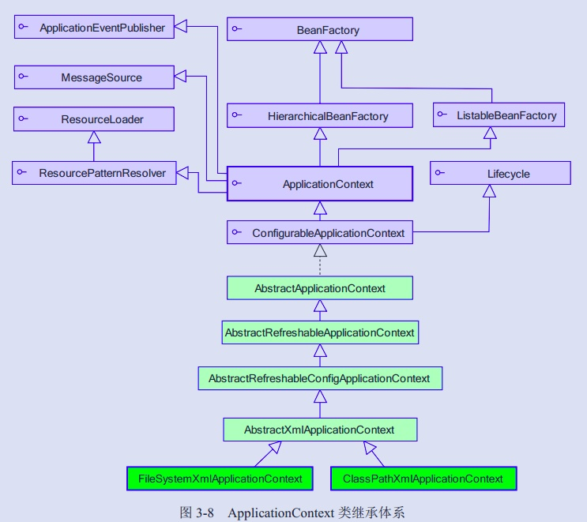
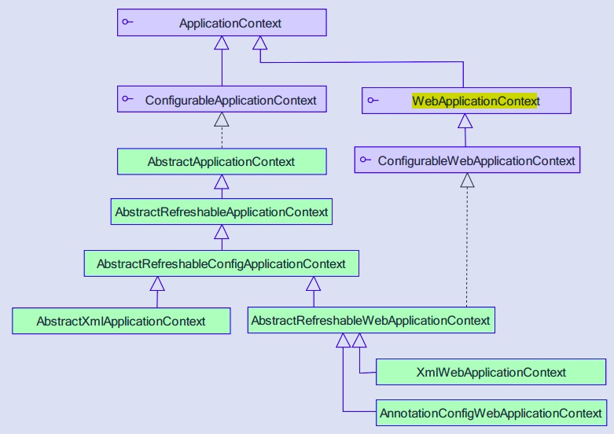
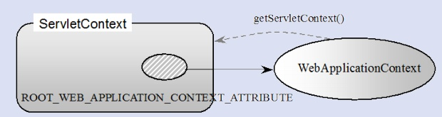
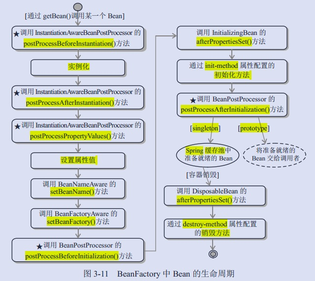
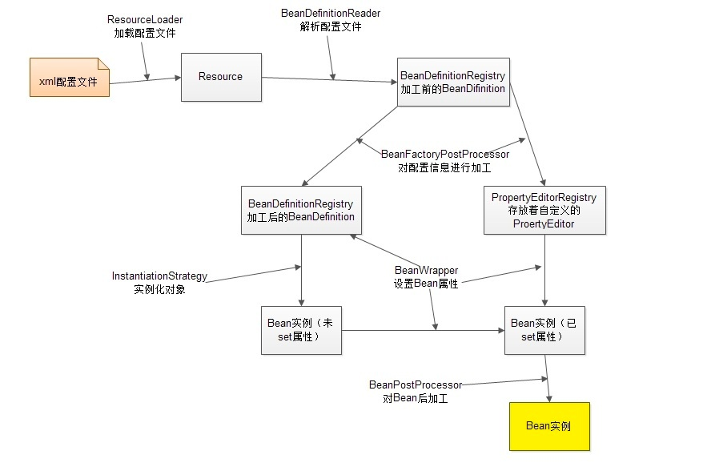

Spring容器高层视图
Spring 启动时读取应用程序提供的Bean配置信息，并在Spring容器中生成一份相应的Bean配置注册表，然后根据这张注册表实例化Bean，装配好Bean之间的依赖关系，为上层应用提供准备就绪的运行环境。

Bean缓存池：HashMap实现
IOC容器介绍
Spring 通过一个配置文件描述 Bean 及 Bean 之间的依赖关系，利用 Java 语言的反射功能实例化 Bean 并建立 Bean 之间的依赖关系。 Spring 的 IoC 容器在完成这些底层工作的基础上，还提供了 Bean 实例缓存、生命周期管理、 Bean 实例代理、事件发布、资源装载等高级服务。
BeanFactory
BeanFactory体系架构：

• BeanDefinitionRegistry： Spring 配置文件中每一个<bean>节点元素在 Spring 容器里都通过一个 BeanDefinition 对象表示，它描述了 Bean 的配置信息。而 BeanDefinitionRegistry 接口提供了向容器手工注册 BeanDefinition 对象的方法。
• BeanFactory 接口位于类结构树的顶端 ，它最主要的方法就是 getBean(String beanName)，该方法从容器中返回特定名称的 Bean，BeanFactory 的功能通过其他的接口得到不断扩展：
• ListableBeanFactory：该接口定义了访问容器中 Bean 基本信息的若干方法，如查看Bean 的个数、获取某一类型 Bean 的配置名、查看容器中是否包括某一 Bean 等方法；
• HierarchicalBeanFactory：父子级联 IoC 容器的接口，子容器可以通过接口方法访问父容器； 通过 HierarchicalBeanFactory 接口， Spring 的 IoC 容器可以建立父子层级关联的容器体系，子容器可以访问父容器中的 Bean，但父容器不能访问子容器的 Bean。Spring 使用父子容器实现了很多功能，比如在 Spring MVC 中，展现层 Bean 位于一个子容器中，而业务层和持久层的 Bean 位于父容器中。这样，展现层 Bean 就可以引用业务层和持久层的 Bean，而业务层和持久层的 Bean 则看不到展现层的 Bean。
• ConfigurableBeanFactory：是一个重要的接口，增强了 IoC 容器的可定制性，它定义了设置类装载器、属性编辑器、容器初始化后置处理器等方法；
• AutowireCapableBeanFactory：定义了将容器中的 Bean 按某种规则（如按名字匹配、按类型匹配等）进行自动装配的方法；
• SingletonBeanRegistry：定义了允许在运行期间向容器注册单实例 Bean 的方法；
例子：
使用 Spring 配置文件为 Car 提供配置信息：beans.xml：
<?xml version="1.0" encoding="UTF-8" ?>
<beans xmlns="Index of /schema/beans"
xmlns:xsi="http://www.w3.org/2001/XMLSchema-instance"
xmlns:p="http://www.springframework.org/schema/p"
xsi:schemaLocation="Index of /schema/beans
http://www.springframework.org/schema/beans/spring-beans-3.0.xsd">
<bean id="car1" class="com.baobaotao.Car"
p:brand="红旗CA72"
p:color="黑色"
p:maxSpeed="200" />
</beans>
通过 BeanFactory 装载配置文件，启动 Spring IoC 容器：
public class BeanFactoryTest {
public static void main(String[] args) throws Throwable{
ResourcePatternResolver resolver = new PathMatchingResourcePatternResolver();
Resource res = resolver.getResource("classpath:com/baobaotao/beanfactory/beans.xml");
BeanFactory bf = new XmlBeanFactory(res);
System.out.println("init BeanFactory.");
Car car = bf.getBean("car",Car.class);
System.out.println("car bean is ready for use!");
}
• XmlBeanFactory 通过 Resource 装载 Spring 配置信息并启动 IoC 容器，然后就可以通过 BeanFactory#getBean(beanName)方法从 IoC 容器中获取 Bean 了。通过 BeanFactory 启动IoC 容器时，并不会初始化配置文件中定义的 Bean，初始化动作发生在第一个调用时。
• 对于单实例（ singleton）的 Bean 来说，BeanFactory会缓存 Bean 实例，所以第二次使用 getBean() 获取 Bean 时将直接从 IoC 容器的缓存中获取 Bean 实例。Spring 在 DefaultSingletonBeanRegistry 类中提供了一个用于缓存单实例 Bean 的缓存器，它是一个用HashMap 实现的缓存器，单实例的 Bean 以 beanName 为键保存在这个HashMap 中。
• 值得一提的是，在初始化 BeanFactory 时，必须为其提供一种日志框架，比如使用Log4J， 即在类路径下提供 Log4J 配置文件，这样启动 Spring 容器才不会报错。
ApplicationContext
ApplicationContext 由 BeanFactory 派生而来，提供了更多面向实际应用的功能。
在BeanFactory 中，很多功能需要以编程的方式实现，而在 ApplicationContext 中则可以通过配置的方式实现。

ApplicationContext 继承了 HierarchicalBeanFactory 和 ListableBeanFactory 接口，在此基础上，还通过多个其他的接口扩展了 BeanFactory 的功能：
• ClassPathXmlApplicationContext：默认从类路径加载配置文件
• FileSystemXmlApplicationContext：默认从文件系统中装载配置文件
• ApplicationEventPublisher：让容器拥有发布应用上下文事件的功能，包括容器启动事件、关闭事件等。实现了 ApplicationListener 事件监听接口的 Bean 可以接收到容器事件 ， 并对事件进行响应处理 。 在 ApplicationContext 抽象实现类AbstractApplicationContext 中，我们可以发现存在一个 ApplicationEventMulticaster，它负责保存所有监听器，以便在容器产生上下文事件时通知这些事件监听者。
• MessageSource：为应用提供 i18n 国际化消息访问的功能；
• ResourcePatternResolver ： 所 有 ApplicationContext 实现类都实现了类似于PathMatchingResourcePatternResolver 的功能，可以通过带前缀的 Ant 风格的资源文件路径装载 Spring 的配置文件。
• LifeCycle：该接口是 Spring 2.0 加入的，该接口提供了 start()和 stop()两个方法，主要用于控制异步处理过程。在具体使用时，该接口同时被 ApplicationContext 实现及具体 Bean 实现， ApplicationContext 会将 start/stop 的信息传递给容器中所有实现了该接口的 Bean，以达到管理和控制 JMX、任务调度等目的。
• ConfigurableApplicationContext 扩展于 ApplicationContext，它新增加了两个主要的方法： refresh()和 close()，让 ApplicationContext 具有启动、刷新和关闭应用上下文的能力。在应用上下文关闭的情况下调用 refresh()即可启动应用上下文，在已经启动的状态下，调用 refresh()则清除缓存并重新装载配置信息，而调用close()则可关闭应用上下文。这些接口方法为容器的控制管理带来了便利，但作为开发者，我们并不需要过多关心这些方法。
使用：
如果配置文件放置在类路径下，用户可以优先使用 ClassPathXmlApplicationContext 实现类：
ApplicationContext ctx = new ClassPathXmlApplicationContext("com/baobaotao/ context/beans.xml");
如果配置文件放置在文件系统的路径下，则可以优先考虑使用 FileSystemXmlApplicationContext 实现类：
ApplicationContext ctx = new FileSystemXmlApplicationContext("com/baobaotao/ context/beans.xml");
Spring 3.0 支持基于类注解的配置方式，主要功能来自于 Spring 的一个名为 JavaConfig 子项目，目前 JavaConfig已经升级为 Spring核心框架的一部分。
ApplicationContext 在初始化应用上下文时就实例化所有单实例的 Bean。
WebApplicationContext
WebApplication体系架构：

WebApplicationContext wac = (WebApplicationContext)servletContext.getAttribute(WebApplicationContext.ROOT_WEB_APPLICATION_CONTEXT_ATTRIBUTE);
Spring 和 Web 应用的上下文融合：

Bean的生命周期

• 1．当调用者通过 getBean(beanName)向容器请求某一个 Bean 时，如果容器注册了org.springframework.beans.factory.config.InstantiationAwareBeanPostProcessor 接口，在实例化 Bean 之前，将调用接口的 postProcessBeforeInstantiation()方法；
• 2．根据配置情况调用 Bean 构造函数或工厂方法实例化 Bean；
• 3．如果容器注册了 InstantiationAwareBeanPostProcessor 接口，在实例化 Bean 之后，调用该接口的 postProcessAfterInstantiation()方法，可在这里对已经实例化的对象进行一些“梳妆打扮”；
• 4．如果 Bean 配置了属性信息，容器在这一步着手将配置值设置到 Bean 对应的属性中，不过在设置每个属性之前将先调用InstantiationAwareBeanPostProcessor 接口的postProcessPropertyValues()方法；
• 5．调用 Bean 的属性设置方法设置属性值；
• 6．如果 Bean 实现了 org.springframework.beans.factory.BeanNameAware 接口，将调用setBeanName()接口方法，将配置文件中该 Bean 对应的名称设置到 Bean 中；
• 7．如果 Bean 实现了 org.springframework.beans.factory.BeanFactoryAware 接口，将调用 setBeanFactory()接口方法，将 BeanFactory 容器实例设置到 Bean 中；
• 8．如果 BeanFactory 装配了 org.springframework.beans.factory.config.BeanPostProcessor后处理器，将调用 BeanPostProcessor 的 Object postProcessBeforeInitialization(Object bean, String beanName)接口方法对 Bean 进行加工操作。其中入参 bean 是当前正在处理的 Bean，而 beanName 是当前 Bean 的配置名，返回的对象为加工处理后的 Bean。用户可以使用该方法对某些 Bean 进行特殊的处理，甚至改变 Bean 的行为， BeanPostProcessor 在 Spring 框架中占有重要的地位，为容器提供对 Bean 进行后续加工处理的切入点， Spring 容器所提供的各种“神奇功能”（如 AOP，动态代理等）都通过 BeanPostProcessor 实施；
• 9．如果 Bean 实现了 InitializingBean 的接口，将调用接口的 afterPropertiesSet()方法；
• 10．如果在<bean>通过 init-method 属性定义了初始化方法，将执行这个方法；
• 11．BeanPostProcessor 后处理器定义了两个方法：其一是 postProcessBeforeInitialization() 在第 8 步调用；其二是 Object postProcessAfterInitialization(Object bean, String beanName)方法，这个方法在此时调用，容器再次获得对 Bean 进行加工处理的机会；
• 12．如果在<bean>中指定 Bean 的作用范围为 scope=“prototype”，将 Bean 返回给调用者，调用者负责 Bean 后续生命的管理， Spring 不再管理这个 Bean 的生命周期。如果作用范围设置为 scope=“singleton”，则将 Bean 放入到 Spring IoC 容器的缓存池中，并将 Bean引用返回给调用者， Spring 继续对这些 Bean 进行后续的生命管理；
• 13．对于 scope=“singleton”的 Bean，当容器关闭时，将触发 Spring 对 Bean 的后续生命周期的管理工作，首先如果 Bean 实现了 DisposableBean 接口，则将调用接口的afterPropertiesSet()方法，可以在此编写释放资源、记录日志等操作；
• 14．对于 scope=“singleton”的 Bean，如果通过<bean>的 destroy-method 属性指定了 Bean 的销毁方法， Spring 将执行 Bean 的这个方法，完成 Bean 资源的释放等操作。
可以将这些方法大致划分为三类：
• Bean 自身的方法：如调用 Bean 构造函数实例化 Bean，调用 Setter 设置 Bean 的属性值以及通过<bean>的 init-method 和 destroy-method 所指定的方法；
• Bean 级生命周期接口方法：如 BeanNameAware、 BeanFactoryAware、 InitializingBean 和 DisposableBean，这些接口方法由 Bean 类直接实现；
• 容器级生命周期接口方法：在上图中带“★” 的步骤是由 InstantiationAwareBean PostProcessor 和 BeanPostProcessor 这两个接口实现，一般称它们的实现类为“ 后处理器” 。 后处理器接口一般不由 Bean 本身实现，它们独立于 Bean，实现类以容器附加装置的形式注册到 Spring 容器中并通过接口反射为 Spring 容器预先识别。当Spring 容器创建任何 Bean 的时候，这些后处理器都会发生作用，所以这些后处理器的影响是全局性的。当然，用户可以通过合理地编写后处理器，让其仅对感兴趣Bean 进行加工处理
ApplicationContext 和 BeanFactory 另一个最大的不同之处在于：ApplicationContext会利用 Java 反射机制自动识别出配置文件中定义的 BeanPostProcessor、 InstantiationAwareBeanPostProcessor 和 BeanFactoryPostProcessor，并自动将它们注册到应用上下文中；而后者需要在代码中通过手工调用 addBeanPostProcessor()方法进行注册。这也是为什么在应用开发时，我们普遍使用 ApplicationContext 而很少使用 BeanFactory 的原因之一
IOC容器工作机制
容器启动过程
web环境下Spring容器、SpringMVC容器启动过程：
1. 首先，对于一个web应用，其部署在web容器中，web容器提供其一个全局的上下文环境，这个上下文就是ServletContext，其为后面的spring IoC容器提供宿主环境；
2. 其次，在web.xml中会提供有contextLoaderListener（或ContextLoaderServlet）。在web容器启动时，会触发容器初始化事件，此时contextLoaderListener会监听到这个事件，其contextInitialized方法会被调用，在这个方法中，spring会初始化一个启动上下文，这个上下文被称为根上下文，即WebApplicationContext，这是一个接口类，确切的说，其实际的实现类是XmlWebApplicationContext。这个就是spring的IoC容器，其对应的Bean定义的配置由web.xml中的context-param标签指定。在这个IoC容器初始化完毕后，spring容器以WebApplicationContext.ROOTWEBAPPLICATIONCONTEXTATTRIBUTE为属性Key，将其存储到ServletContext中，便于获取；
3. 再次，contextLoaderListener监听器初始化完毕后，开始初始化web.xml中配置的Servlet，这个servlet可以配置多个，以最常见的DispatcherServlet为例（Spring MVC），这个servlet实际上是一个标准的前端控制器，用以转发、匹配、处理每个servlet请求。DispatcherServlet上下文在初始化的时候会建立自己的IoC上下文容器，用以持有spring mvc相关的bean，这个servlet自己持有的上下文默认实现类也是XmlWebApplicationContext。在建立DispatcherServlet自己的IoC上下文时，会利用WebApplicationContext.ROOTWEBAPPLICATIONCONTEXTATTRIBUTE先从ServletContext中获取之前的根上下文(即WebApplicationContext)作为自己上下文的parent上下文（即第2步中初始化的XmlWebApplicationContext作为自己的父容器）。有了这个parent上下文之后，再初始化自己持有的上下文（这个DispatcherServlet初始化自己上下文的工作在其initStrategies方法中可以看到，大概的工作就是初始化处理器映射、视图解析等）。初始化完毕后，spring以与servlet的名字相关(此处不是简单的以servlet名为Key，而是通过一些转换)的属性为属性Key，也将其存到ServletContext中，以便后续使用。这样每个servlet就持有自己的上下文，即拥有自己独立的bean空间，同时各个servlet共享相同的bean，即根上下文定义的那些bean。
Bean加载过程
Spring的高明之处在于，它使用众多接口描绘出了所有装置的蓝图，构建好Spring的骨架，继而通过继承体系层层推演，不断丰富，最终让Spring成为有血有肉的完整的框架。所以查看Spring框架的源码时，有两条清晰可见的脉络：
1）接口层描述了容器的重要组件及组件间的协作关系；
2）继承体系逐步实现组件的各项功能。
接口层清晰地勾勒出Spring框架的高层功能，框架脉络呼之欲出。有了接口层抽象的描述后，不但Spring自己可以提供具体的实现，任何第三方组织也可以提供不同实现， 可以说Spring完善的接口层使框架的扩展性得到了很好的保证。纵向继承体系的逐步扩展，分步骤地实现框架的功能，这种实现方案保证了框架功能不会堆积在某些类的身上，造成过重的代码逻辑负载，框架的复杂度被完美地分解开了。
Spring组件按其所承担的角色可以划分为两类：
• 1）物料组件：Resource、BeanDefinition、PropertyEditor以及最终的Bean等，它们是加工流程中被加工、被消费的组件，就像流水线上被加工的物料；
• 2）加工设备组件：ResourceLoader、BeanDefinitionReader、BeanFactoryPostProcessor、InstantiationStrategy以及BeanWrapper等组件像是流水线上不同环节的加工设备，对物料组件进行加工处理。
• InstantiationStrategy：负责实例化Bean操作，相当于Java语言中new的功能，并不会参与Bean属性的配置工作。属性填充工作留待BeanWrapper完成
• BeanWrapper：继承了PropertyAccessor和PropertyEditorRegistry接口，BeanWrapperImpl内部封装了两类组件：（1）被封装的目标Bean（2）一套用于设置Bean属性的属性编辑器；具有三重身份：（1）Bean包裹器（2）属性访问器 （3）属性编辑器注册表。PropertyAccessor：定义了各种访问Bean属性的方法。PropertyEditorRegistry：属性编辑器的注册表
该图描述了Spring容器从加载配置文件到创建出一个完整Bean的作业流程：

• １、ResourceLoader从存储介质中加载Spring配置信息，并使用Resource表示这个配置文件的资源；
• ２、BeanDefinitionReader读取Resource所指向的配置文件资源，然后解析配置文件。配置文件中每一个<bean>解析成一个BeanDefinition对象，并保存到BeanDefinitionRegistry中；
• ３、容器扫描BeanDefinitionRegistry中的BeanDefinition，使用Java的反射机制自动识别出Bean工厂后处理后器（实现BeanFactoryPostProcessor接口）的Bean，然后调用这些Bean工厂后处理器对BeanDefinitionRegistry中的BeanDefinition进行加工处理。主要完成以下两项工作：
• 1）对使用到占位符的<bean>元素标签进行解析，得到最终的配置值，这意味对一些半成品式的BeanDefinition对象进行加工处理并得到成品的BeanDefinition对象；
• 2）对BeanDefinitionRegistry中的BeanDefinition进行扫描，通过Java反射机制找出所有属性编辑器的Bean（实现java.beans.PropertyEditor接口的Bean），并自动将它们注册到Spring容器的属性编辑器注册表中（PropertyEditorRegistry）；
• 4．Spring容器从BeanDefinitionRegistry中取出加工后的BeanDefinition，并调用InstantiationStrategy着手进行Bean实例化的工作；
• 5．在实例化Bean时，Spring容器使用BeanWrapper对Bean进行封装，BeanWrapper提供了很多以Java反射机制操作Bean的方法，它将结合该Bean的BeanDefinition以及容器中属性编辑器，完成Bean属性的设置工作；
• 6．利用容器中注册的Bean后处理器（实现BeanPostProcessor接口的Bean）对已经完成属性设置工作的Bean进行后续加工，直接装配出一个准备就绪的Bean。
总结
1. BeanDefinitionReader读取Resource所指向的配置文件资源，然后解析配置文件。配置文件中每一个<bean>解析成一个BeanDefinition对象，并保存到BeanDefinitionRegistry中；
2. 容器扫描BeanDefinitionRegistry中的BeanDefinition；调用InstantiationStrategy进行Bean实例化的工作；使用BeanWrapper完成Bean属性的设置工作；
3. 单例Bean缓存池：Spring 在 DefaultSingletonBeanRegistry 类中提供了一个用于缓存单实例 Bean 的缓存器，它是一个用 HashMap 实现的缓存器，单实例的 Bean 以 beanName 为键保存在这个HashMap 中。
参考来源：
《Spring 3.x企业应用开发实战》
（本文首发于公众号：EnjoyMoving）
{kind=link}